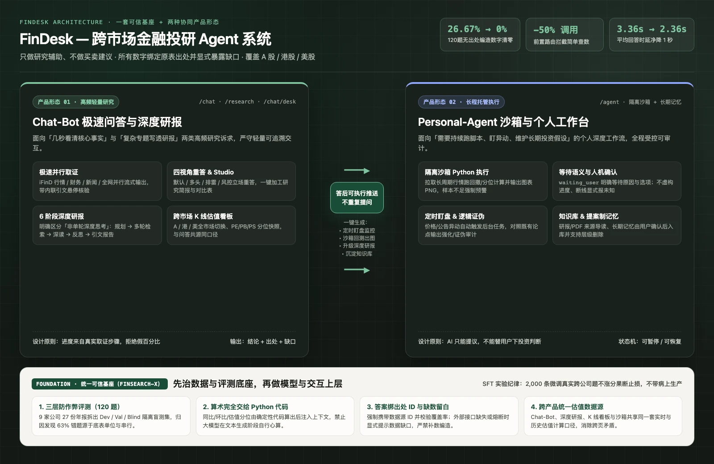
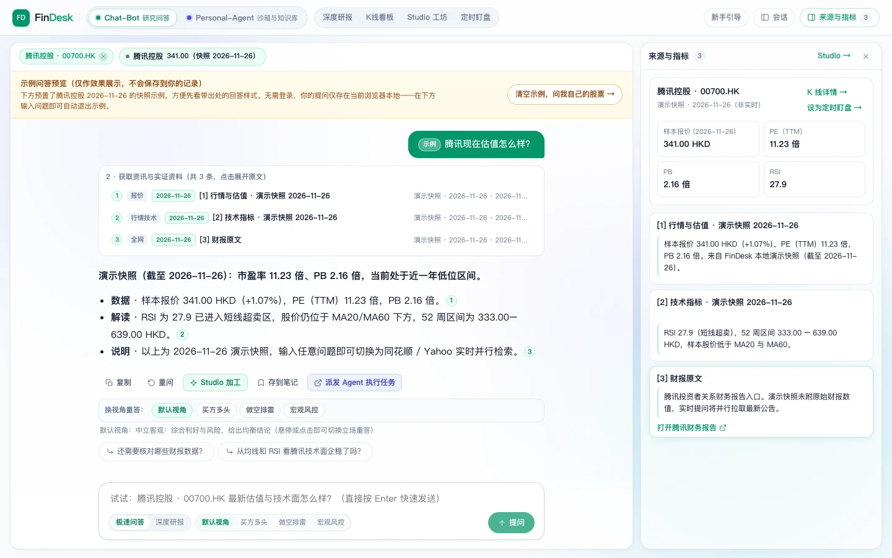
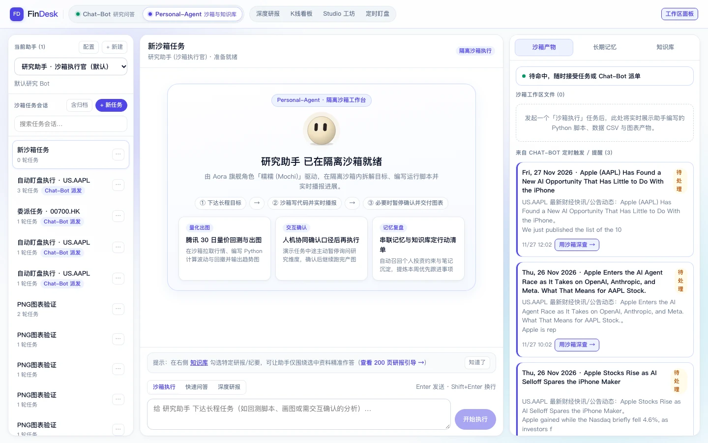

FinDesk — 把金融大模型关进「评测、代码算术与溯源」里的双形态投研 Agent
面向个人投资者与研究辅助场景，我构建了一个覆盖 A 股、港股与美股的受控投研系统：先建一套 FinSearch-X 可信基座（「算术归代码、答案绑出处、缺数显式留白」+ 120 题三层隔离评测集），再按用户心智拆出 Chat-Bot（极速并行问答、K 线估值看板与 6 阶段深度研报）与 Personal-Agent（隔离沙箱跑 Python 出图、定时盯盘与论点证伪审计）两种协同形态。在 120 道真实年报测试题上，无出处编造数字的比例从 26.67% 降至 0%。
- 我的角色
- 产品与系统全栈负责人（场景拆解、120 题盲测设计、交互边界定义到全栈上线与香港服务器运维）
- 产品架构
- 1 套可信基座（FinSearch-X）× 2 种协同形态（Chat-Bot 高频研究 + Personal-Agent 长程执行）
- 覆盖市场
- A 股 / 港股（同花顺 iFinD 实时行情与分位）· 美股（SEC EDGAR 财报与行情）· 全网检索
- 线上体验
- 公网 HTTPS 免登录试玩，覆盖极速问答、6 阶段深度研报、K 线看板与沙箱执行

点击放大通用大模型看财报：2 秒生成看似专业，10 分钟核对发现算错了账。
在严肃投研场景中，用户最先卡住的不是“模型文笔好不好”，而是信任成本与核对成本。一句「营收同比增长 18.4%」，如果要切去行情软件查现价、翻百页年报 PDF 核对报告期、再确认港币还是人民币，工具就已经变成了负资产。
进一步复盘我发现，如果把「几秒查清一个问题」和「需要跑脚本/盯异动/记偏好的长程任务」混进同一个聊天框，还会带来第三层混乱：轻量问答被长流程拖慢，长程执行又缺少独立的工作区、等待确认与状态回溯。
报告期、币种与单位混算
跨市场比较时把今年全年和去年前三季度混比，或把「百万元」与「千元」、人民币与港币直接混算。
26.67% 回答含无出处数字
早期无护栏测试里，超过四分之一回答会凭语言惯性自己心算增长率，或在缺数据时补写出看似合理的数字。
单对话窗承载过载
快速查数被重流程拖慢；写长研报与跑定时盯盘又缺乏真实步骤可见性、人机确认与跨页统一估值口径。
金融产品的第一原则是「宁可明确说某条数据暂缺，也绝不用顺畅的术语输出一个算错的数」——且系统明确只做研究辅助，绝不替代用户下买卖指令。 给 FinDesk 立下的两条产品红线（写死在每次研究结论页脚）
先建 120 题隔离评测基座，再把算术、校验与口径收口到底层。
做任何功能迭代前，我先挑了 A 股、港股、美股 9 家代表上市公司的 27 份真实年报，围绕查数、计算、同比趋势、归因和缺数据拒答设计了 120 道题目，严格划分为调参开发集（Dev 30 题）、交叉验证集（Val 30 题）与封存盲测集（Blind 60 题），避免用同一套题自测自夸。
 点击放大
点击放大
财报数字答不准，根因在模型推理不够强吗？
- 常见误区 · 盲目堆长 Prompt 或换更大模型底表结构化科目如果本身串行或单位没换算，换再强的模型也只是用更体面的语气算错数。
- 日志归因 · 27 道错题中 17 道（63%）出在表格解析与单位换算 ✓高频失败点是把「百万元」当「元」、母公司报表与合并报表串行，以及港美股财报日历错位。
落地动作：优先重洗多市场财报事实表并冻结指标口径，再推进 Agent 工具与路由策略。
用 Qwen3-4B 跑完 2,000 条 SFT 后，合成评测到了 100%，要不要上生产？
- 同分布假象 · 合成测试集 75.5% → 100%同分布数据上模型格式极其工整，看着像“已经练成了金融专家”。
- 盲测止损 · 放到 60 道真实跨公司题上不涨分，立即停训 ✓换到没见过的新公司年报附注时依然找错科目，只是学会了研报腔调，果断停止 SFT 上线，把投入转回检索与代码护栏。
沉淀为可信基座的四项硬工程约束
简单查数走代码直连，省掉 50% 模型调用
「现价多少」「PE 几倍」等单点查询不进 Agent 循环，前置路由直接调行情/数据库接口响应，平均耗时从 3.36s 降至 2.36s。
剥离模型一切加减乘除与分位心算
涨跌幅、同比环比、52 周分位与历史估值全部由 Python 在底层算出后喂给模型做文字综合，杜绝模型自己算错小数点。
后置校验拦截无出处数字，缺数报错不补数
每个数字强制绑定来源编号；外部数据源限流或暂无历史估值序列时触发熔断与缺口声明，测试集无出处编造从 26.67% → 0%。
消除看板、问答与研报之间的数字打架
Chat-Bot、深度研报、K 线看板与沙箱脚本统一读取同一份估值计算模块（unified_valuation）与 250 交易日高点口径，做到多端完全对齐。
为什么要把同一套底座拆成 Chat-Bot 和 Personal-Agent 两种形态？
做产品评审和用户走查时我们发现，把“查实时事实 + 生成深度报告”和“沙箱跑脚本 + 定时盯盘 + 维护个人知识库”强行堆在一个界面，会让操作过载且心智混乱。按照「低延迟研究获取」与「长程受控任务托管」两种使用心智，我把产品拆成了职责清晰、单向流转的双形态：
| 对比维度 | Chat-Bot（/chat · /research · /chat/desk） |
Personal-Agent（/agent） |
|---|---|---|
| 核心用户心智 | 高频、轻量、即查即核对；需要深度专题时升级完整研报 | 长程托管、深度加工与持续跟踪；拥有自己的“数字助理”工作区 |
| 交互节奏与延迟 | 极速模式并行流式直出；深度研报显式呈现 6 阶段任务拆解 | 可耗时 30~120 秒后台跑脚本，实时播报真实步骤与 waiting_user 确认 |
| 核心能力承载 | 并行取证、四视角立场重答、K 线估值看板、Studio 简报工坊、6 阶段深度研报 | 隔离沙箱执行 Python/画图、定时盯盘自动派单、PDF 导读知识库与论点证伪审计 |
| 防失控/防误导机制 | 区分「极速问答 vs 6 阶段深度研报」，严防把单轮思考当研究；异常超长输入保护 | 禁止以 6 周短数据冒充年度回撤结论；记忆采取提案制，由用户确认才长期生效 |
为什么在「极速问答」旁拆出独立的「深度研报（/research）」，而不是叫“深度思考”？
- 常规做法 · 提供「快答 / 深度思考」开关用户常以为“深度思考”只是慢几秒的 CoT 推理，容易对单次提问期待过高，且长耗时和交互过程在聊天流里极难展示清晰。
- FinDesk 方案 · 明确宣告「不是深度思考，而是 6 阶段深度研报」 ✓全站引导用户区分：复杂专题进入独立的 6 阶段研究工作台（规划 → 多轮检索 → 全文抓取 → 重排 → 缺口反思 → 引文报告），并在产物页直接支持一键存入知识库或转设定时盯盘。
用户在 Chat-Bot 查完估值后，「投研信息推送」卡片把信息推到 Personal-Agent 应该做什么？
- 低效流转 · 带着原问题跳去 Agent 再问一遍既浪费等待时间，又制造重复答案，用户很快觉得“两个页面只是换个皮肤聊同一件事”。
- 可执行流转 · 推送直接对应 5 个真实可落地的 Agent 动作 ✓答后推送卡片按当前上下文直接提供：① 设定时盯盘任务（弹窗提炼阈值与轮询间隔）；② 生成 Studio 简报；③ 升级 6 阶段深度研报；④ 派发沙箱跑 Python 回测与 PNG 出图；⑤ 沉淀知识库。
Personal-Agent 在沙箱后台跑任务时，怎样让用户敢把重要研究工作交出去？
- 黑箱进度条 · 转圈展示“已完成 68%”百分比往往是前端写死的假动画；遇到数据缺失时硬凑一年回测结论更是严重误导。
- 真实状态机 + 数据口径硬防护 ✓步骤只来自真实动作；明确区分
running / waiting_user / partial / failed / unknown；外部行情只取到近 6 周时禁止模型输出“近一年最大回撤”，强制先亮覆盖不足预警再给有限区间的量化统计。
从截图到真实功能：两个形态各自解决什么问题，又如何闭环？
形态一：Chat-Bot（高频问答 · 6 阶段深度研报 · 统一看板）
定位为「高密度的投研第一入口」：首次进入直接加载带可核验引用的真实样式示例，支持免登录立即提问；右栏随时展开指标与出处原文，并可在不同市场看板间无缝跳转。

点击放大多源异步并发，实时吐出引文
并行拉取同花顺实时行情、量价技术面、估值分位、财经资讯与全网线索，流式文本自动对超长来源标题做响应式截断与防溢出控制。
立场可切换，结论一键出图出表
答案区下方支持一键切换「默认中立 / 买方多头 / 做空排雷 / 宏观风控」重答；可通过 Studio 加工出研究简报、对比矩阵与思维导图。
专治复杂专题，拒绝浅层思考
面向“行业竞争格局对比”“长周期下跌归因”等课题，独立跑 6 阶段检索-抓全文-重排-反思循环，生成带可点击角标引文的长篇研报。
全市场搜索切换与 URL 分享
支持输入股票代码/名称搜索建议下拉与回车即时切换，?symbol= 同步 URL；与 Chat-Bot 共用统一估值快照（PE / PB / PS / 总市值）。
形态二：Personal-Agent（隔离沙箱 · 定时盯盘 · 知识库闭环）
定位为「有持久记忆和动手能力的个人投研助理」：具备专属角色预设（如哨兵/量化/研究员）、独立沙箱工作目录，能够承接 Chat-Bot 派发的任务，也能在盯盘触发异常时自动审计用户既有的投资逻辑。

点击放大独立目录跑 Python + Matplotlib 出图
针对量化回测与长区间分析需求，在受控工作区创建任务目录、拉取历史行情并由 Python 渲染高分辨率图表（PNG）与分析文档。
异动触发后台执行，告别死等
设定价格波动或公告阈值后由后台轮询守护，触发通知时可一键自动向指定 Agent 派发复核任务并推送站内提醒。
拿着你的原话，检验新消息
当监控捕获到财报或突发消息时，系统会自动比对用户知识库里沉淀的既有投资论点，给出强化（STRENGTHEN）或证伪预警（FALSIFY）。
只基于勾选资料，删除可追溯
支持上传研报/PDF 生成结构化来源导读（关键发现与建议追问）；长期记忆采用确认提案制，避免 AI 把未验证观点私自写入记忆。
建议从 Chat-Bot 或 深度研报 开始体验答后推送，再切换到 Personal-Agent 查看沙箱与知识库闭环；或先访问 FinDesk 产品全景首页（/landing）↗。
Chat-Bot 极速问答与可执行推送（/chat）
并行检索行情/估值/资讯，支持默认/多头/排雷/风控四视角重答；答后卡片可直接设盯盘、做简报、跳深度研报或派沙箱出图。
6 阶段全网深度研报工作台（/research）
清晰区别于单轮“深度思考”：完整展示规划、多轮检索、深读、反思与引用成稿过程，并支持一键存入知识库或转设盯盘。
Personal-Agent 个人工作台（/agent）
独立角色预设、沙箱 Python 回测出图、人机确认状态机（waiting_user）、定时盯盘自动派单与论点证伪审计。
跨市场 K 线与估值看板（/chat/desk）
A 股 / 港股 / 美股搜索下拉与回车切换、K 线均线指标、PE/PB/PS 快照与 52 周区间，与 Chat-Bot 共享底层数据与计算口径。
单步消融数据全部可追溯，同时坦诚当前产品边界与待补工程项。
整个基座评测围绕 Qwen3-4B 这种 4B 小参数底座在「数字、单位、出处必须全对」的严苛口径下做单步消融对照。结果证明：哪怕基座模型很小，只要底表洗净、算术交代码、护栏卡死，关键可靠性指标就会大幅跃升。
 点击放大
点击放大
| 改造与对照步骤 | 评测集范围 | 可验证数据变化 | 提炼出的产品决策原则 |
|---|---|---|---|
| 1. 错题日志归因 + 重洗年报底表 | Dev 开发集 30 题 | 确认 17 / 27 错题（63%） 源于表格解析与单位换算 | 答不准先查数据源与口径字典，调提示词掩盖不了脏数据 |
| 2. 算术剥离给代码 + 无出处拦截 | 120 题真实年报题库 | 无出处编造数字比例 26.67% → 0% |
金融场景靠代码护栏与后置校验兜底，不依赖大模型“自觉遵守” |
| 3. 前置意图路由分流（Query Router） | 同上 120 题基准 | 大模型调用量 -50%，平均耗时 3.36s → 2.36s |
约一半简单查数请求无需进大模型推理，同时降低成本与首字等待 |
| 4. 整套基座护栏前后对照 （4B 小模型数字/单位/出处严苛全对口径） |
120 题隔离考卷 | Dev 全对率 6.67% → 43.33%Val 泛化全对率 6.67% → 13.33% |
护栏配合净表可数倍提效，但跨公司非标科目长尾映射仍受底座能力制约 |
| 5. 2,000 条微调（SFT）对照实验 | 同分布合成题 vs 60 道真实跨公司题 | 合成题 75.5% → 100%，真实跨公司题无提升 |
果断停训不上生产——SFT 仅学会句式，没解决跨公司附注查表问题 |
这套架构做对了哪些关键取舍
- 先立盲测与防作弊纪律，再决定做不做微调：如果没有隔离 Blind 集，2,000 条微调在合成题上的满分很容易误导团队多养一套无效训练管线。
- 按心智拆出双形态并用“答后推送”打通闭环：让 Chat-Bot 专心解决“高频问数 + 深度研报”，Personal-Agent 专心解决“沙箱执行 + 盯盘记忆”，避免两边功能相互拖拽。
- 把诚实变成产品设计的一部分：明确告知深度研报非深度思考、6 周样本不出年度回撤、接口熔断直报缺口、AI 观点先提案再确认，大幅降低了错判隐蔽性。
当前仍然存在的短板与上线边界
- 跨公司非标会计科目对齐长尾：4B 严苛口径下 Val 仅
13.33%，不同财报附注里的同义科目（如“履约成本”vs“营业成本明细”）仍需持续扩展会计语义归并词典。 - 免费/第三方数据源授权与限流：部分历史估值序列受接口限制或跨境网络超时触发熔断（香港机对 iFinD 已补足超时控制与冷却），面向大规模多租户商用前仍需正式商业行情数据授权。
- 删除任务在托管层的边界：记忆删除已在检索层秒级生效，但第三方大模型厂商保留期与数据库冷备份无法在应用层自证物理抹除，产品交互上必须如实提示而非伪装“已完全清除”。
金融单据与理赔影像智能分流 →
公司生产已全量上线的项目：在守住需 OCR 单据召回率 99.63% 的风控红线下，将视觉大模型调用量压降约 25%。